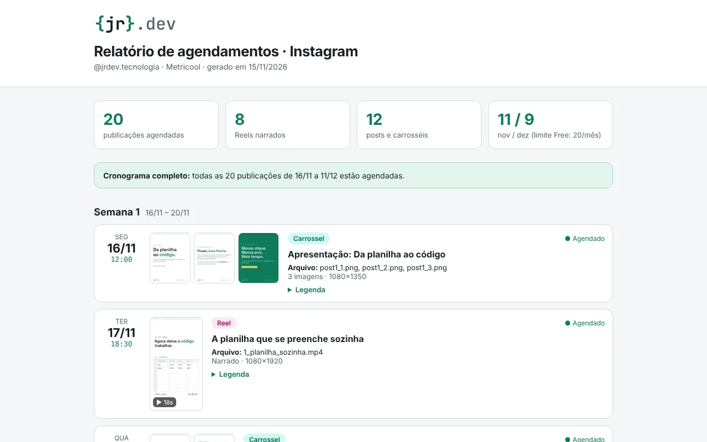
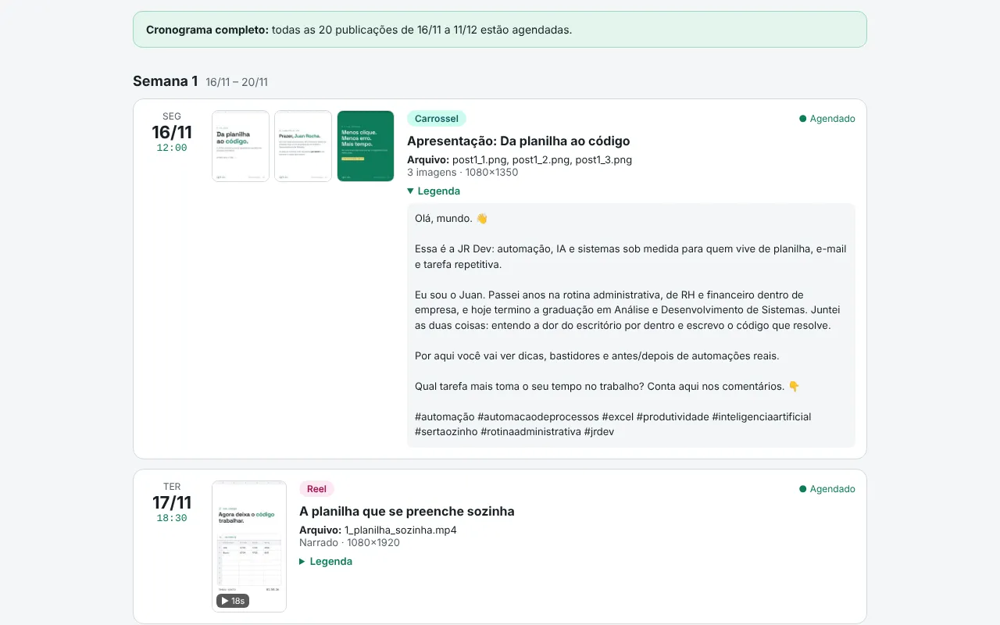
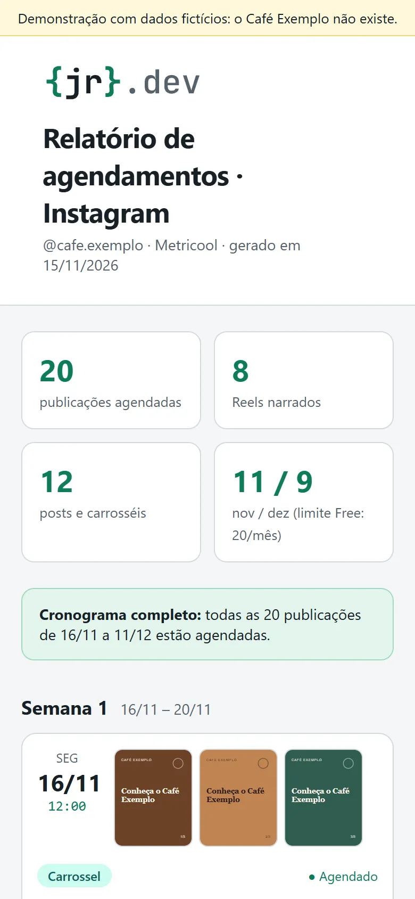
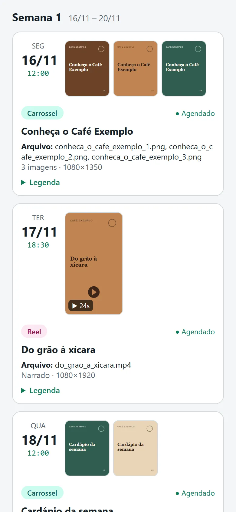

← Voltar aos projetos
automação · JR Dev · 2026
Relatório de agendamentos do Instagram
Página gerada por Python que mostra, semana a semana, todas as publicações agendadas no Instagram, com prévia, arquivo e legenda.
o desafio
20 publicações, 4 semanas, tudo conferido.
Com 20 publicações agendadas para 4 semanas (posts, carrosséis e Reels), ficava difícil conferir rapidamente o que ia ao ar, em que dia, com qual arquivo e com qual legenda, sem abrir post por post na ferramenta de agendamento.
A solução
Um script em Python que:
- consulta as publicações agendadas pela API do Metricool;
- gera miniaturas das artes (Pillow) e um quadro de cada Reel (ffmpeg), embutidas na página em base64;
- agrupa tudo por semana e monta uma página HTML única, leve e responsiva, com indicadores (total, Reels, posts e limite mensal do plano), status de cada publicação e legenda que abre com um toque;
- gera um arquivo só, sem dependências, que dá para abrir no celular ou mandar por WhatsApp e e-mail.
O resultado
- Conferência das 20 publicações do mês em menos de um minuto, no celular.
- Controle visual do limite do plano gratuito (20 publicações/mês).
- Um relatório que pode ser gerado de novo a qualquer momento, sempre com a situação atual dos agendamentos.
telas
No computador e no celular.
As telas e a demo usam dados fictícios: o “Café Exemplo” não existe.


Ver a página inteira em uma imagem → (abre em nova aba)
No celular


por dentro
Dois trechos do script.
import base64, io, subprocess, html, datetime
from PIL import Image
def img64(path,w=220):
im=Image.open(path).convert('RGB'); im.thumbnail((w,w*2)); b=io.BytesIO(); im.save(b,'JPEG',quality=80); return base64.b64encode(b.getvalue()).decode()
def vid64(path,t=None,w=220):
d=float(subprocess.check_output(['ffprobe','-v','error','-show_entries','format=duration','-of','csv=p=0',path]).decode())
subprocess.run(['ffmpeg','-nostdin','-loglevel','error','-y','-ss',str(t if t else d*0.45),'-i',path,'-frames:v','1','/tmp/p.png'])
return img64('/tmp/p.png',w), dcards=[];weeks={}
for d,h,fmt,title,files,cap in P:
dt=datetime.date.fromisoformat(d); wk=dt.isocalendar()[1]
thumbs=''
meta=''
if fmt=='Reel':
b,dur=vid64(files[0]); thumbs=f'<div class="th reel"><img src="data:image/jpeg;base64,{b}"><span class="play">▶ {dur:.0f}s</span></div>'
meta='Narrado · 1080×1920'
else:
for f in files: thumbs+=f'<div class="th"><img src="data:image/jpeg;base64,{img64(f,160 if len(files)>1 else 220)}"></div>'
meta=f'{len(files)} imagens · 1080×1350' if len(files)>1 else '1080×1350'
fl=', '.join(fname.get(f,f.split('/')[-1]) for f in files)
cls={'Reel':'reel','Carrossel':'car','Post':'post'}[fmt]
card=f'''<article class="card"><div class="when"><div class="day">{DIAS[dt.weekday()]}</div><div class="date">{dt.strftime('%d/%m')}</div><div class="hour">{h}</div></div>
<div class="thumbs n{len(files)}">{thumbs}</div>
<div class="info"><div class="top"><span class="tag {cls}">{fmt}</span><span class="ok">● Agendado</span></div><h3>{html.escape(title)}</h3>
<div class="file"><b>Arquivo:</b> {html.escape(fl)}<br><span>{meta}</span></div>
<details><summary>Legenda</summary><p>{html.escape(cap).replace(chr(10),'<br>')}</p></details></div></article>'''
weeks.setdefault(wk,[]).append((dt,card))
sections=''
for i,(wk,items) in enumerate(sorted(weeks.items())):
a=items[0][0]; b=items[-1][0]
sections+=f'<section><h2>Semana {i+1} <small>{a.strftime("%d/%m")} – {b.strftime("%d/%m")}</small></h2>{"".join(c for _,c in items)}</section>'